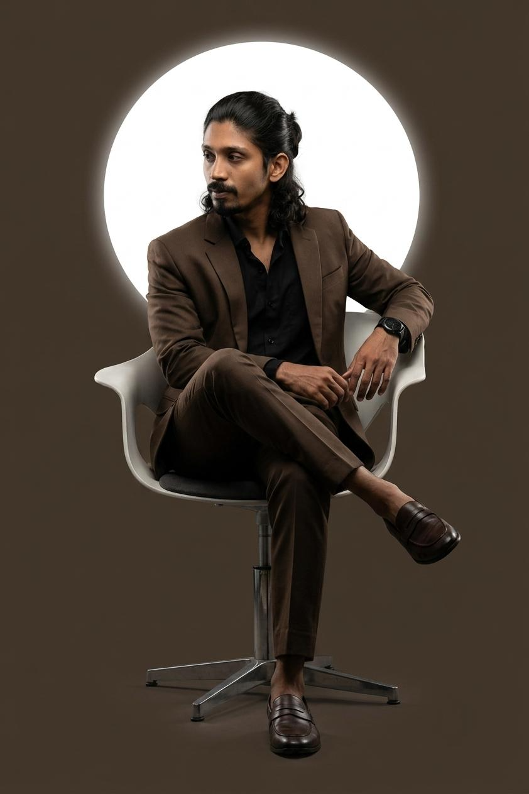
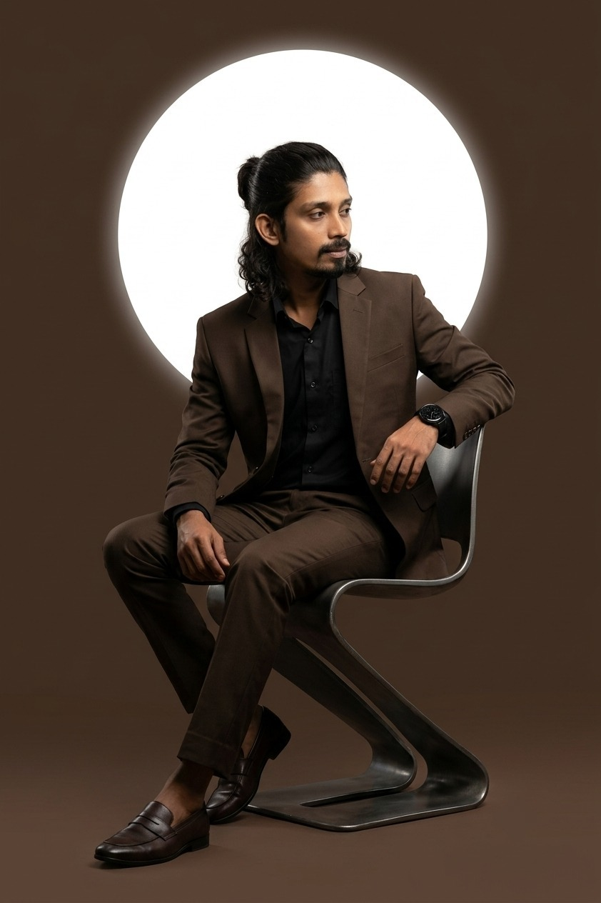

Digital Art
Replace this placeholder with your project image.
work/digital-art/01.jpgPORTFOLIO · SELECTED WORK
A clean, image-led collection for digital art, handmade art, print/design work and other practical projects. The visual system is built to grow as new work is added.

PORTFOLIO DIRECTION
PRACTICAL · VISUAL · EDITABLE
Personal portraits are used only as visual accents. The main portfolio is reserved for work samples: digital art, handmade art, ID cards, labels, menu cards, posters, thumbnails, visiting cards and other projects.
DIGITAL ART
Use the image slots below for digital artwork, compositions, thumbnails and other screen-based work.
Replace this placeholder with your project image.
work/digital-art/01.jpgAdd another digital project here.
work/digital-art/02.jpgUse this slot for thumbnail work.
work/digital-art/03.jpgHANDMADE ART
Keep paintings, handmade pieces and physical artwork together in a calm, image-focused section.
Replace with a handmade project image.
work/handmade-art/01.jpgUse this slot for painting or artwork.
work/handmade-art/02.jpgAdd another physical project.
work/handmade-art/03.jpgPRINT & DESIGN WORK
Dedicated categories for ID cards, labels, menu cards, posters, thumbnails and visiting cards.
Replace with ID card designs.
work/id-cards/01.jpgReplace with label designs.
work/labels/01.jpgReplace with menu card designs.
work/menu-cards/01.jpgReplace with poster designs.
work/posters/01.jpgReplace with thumbnail work.
work/thumbnails/01.jpgReplace with visiting card designs.
work/visiting-cards/01.jpgVISUAL SIGNATURE
PERSONAL VISUAL · SECOND FRAME
This portrait is intentionally separated from the work galleries so the portfolio remains focused on your actual projects.

OTHER PROJECTS
Keep anything outside the main groups here, while keeping the same visual language across the whole portfolio.
Replace with another work sample.
work/other-projects/01.jpgAdd another work sample.
work/other-projects/02.jpgAdd another work sample.
work/other-projects/03.jpg